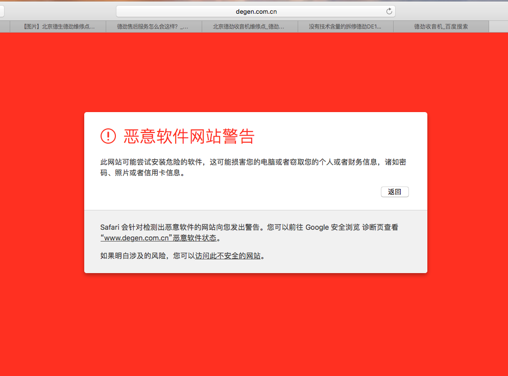
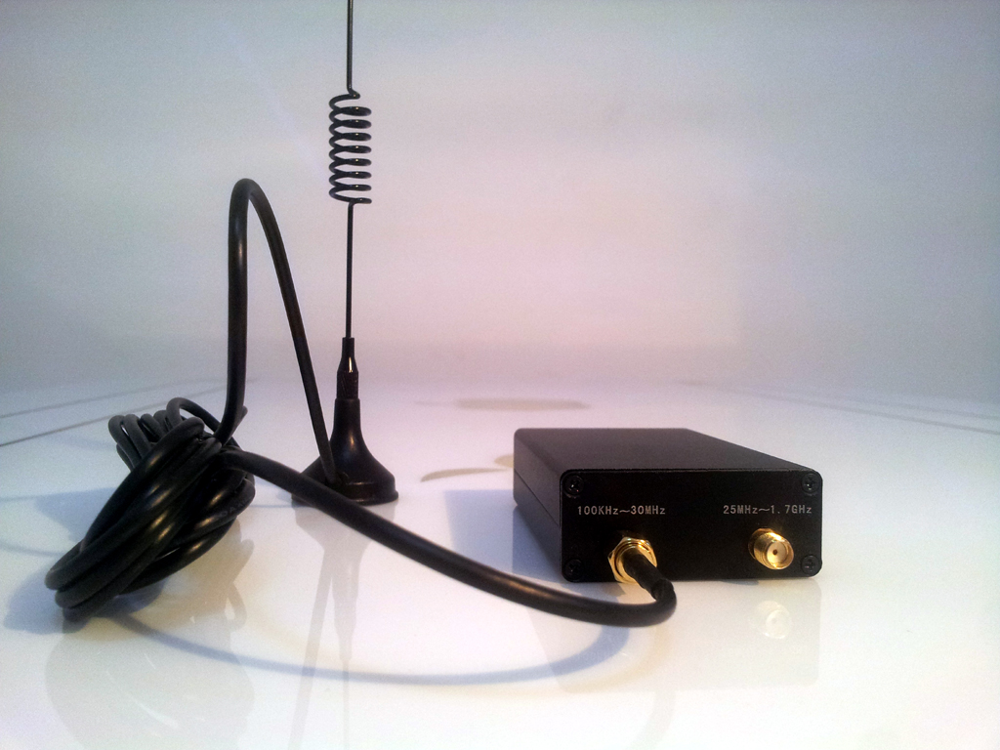
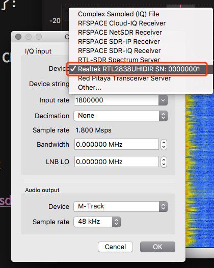
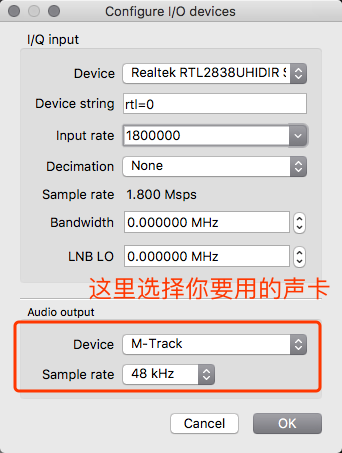
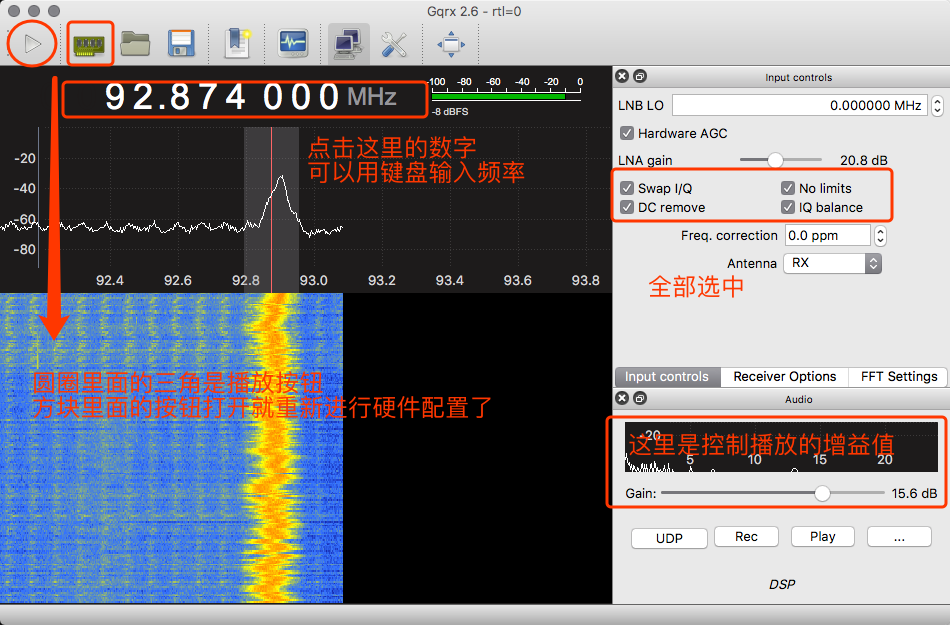
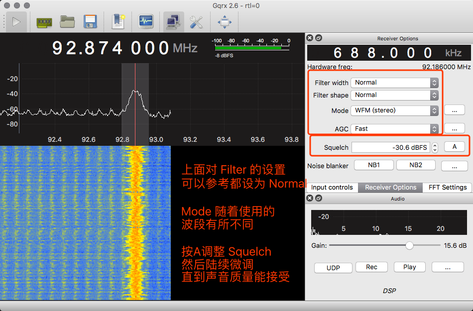

2018年03月19日10:49:39 更新：
现在 macOS 用户可以下载新版本的 Gqrx 2.11.1 的打包客户端了，不那么麻烦了。
最近发现 github 体验不稳定，于是搬运了一下：
下载链接:https://pan.baidu.com/s/1nLPJuJEb-1maVPEnUNyC-A
密码:ohtd
童年乐趣
我从小就喜欢听东西。可能是由于视力比较差，看东西看不清又很痛苦，听东西就能让那时候年幼却很暴躁的我变得非常冷静。
在三五岁的时候，每天最大的快乐就是听收音机，收听中央人民广播电台的“小喇叭”节目，等待着孙敬修老爷爷给讲故事。
然后到了上中学的时候，听广播已经成了习惯，当时艰难地尝试着用短波收听各种奇妙的电台，现在回想起来，大部分都是日语、俄语。有时候还能听到那种非常“慷慨激昂”的大妈在讲述什么，估计是朝鲜语的电台。后来发生了 9-11 恐怖袭击以及伊拉克战争，于是通过电波我第一次听到了局座的声音。
来京读书之后，身边同学使用收音机的场景就逐渐收窄到了四六级考试而已。而我可能用的更多一些，因为当时特别喜欢听 FM887 和 FM915 的一些英语广播内容。那时候傻乎乎又贪图钱财的我，为了跑去中关村打工兼职而逃课，几乎没有去上过英语课。而凭借着日常的熏染，居然还练就了能勉强应对过去的英语听力，结果侥幸一次性通过了四六级。
最近这一段时间，关节炎和结膜炎发作，行走不便，又不方便看东西，就又开始听收音机了。
然而等我拿出来前一阵和同学一同购买的收音机，却发现播放次数不超过十次的机器居然坏掉了。

被坑经历
前一阵子，我们几个人想尝试使用效果更好一点的收音机，于是参考了一些网上的推荐帖子（后来意识到这些帖子很可能都是营销手段，可见我们都很单纯很傻），于是一同买了若干台德劲DE1103 收音机。
然而这真的是悲剧的开始，大家都是用了没有几次，就开始遇到各种各样的坑：这些 350 元一台的收音机陆续出现了屏幕不显示等各种问题。
这让我们很无奈，于是访问官网，结果发现：

虽然我们宁愿相信这是苹果的浏览器比较蠢而已，但为了安全起见，还是去联系了商家，结果发现：
要两个星期，这是多么低效率的维修；而更加无奈的是，卖家此后开始了无线电静默，不再回复我们的任何消息。
卖家居然根本不理人了，我们出离愤怒了，但也无可奈何。
尝试 SDR
接下来我们觉得很愧疚，因为作为三十多岁的理学博士生，居然去买了成品，而没有像老派黑客那样自己动手来探索一下。
所以通过搜索，我们发现了软件无线电 SDR，然后又进一步搜索，发现了最廉价的高性价比方案莫过于基于 RTL2832U+R820T2 的电视棒 RTL-SDR 方案，支持 GNU-radio，全波段覆盖。
最重要的是这个组合真便宜，售价从几十元到数百元不等。相比之下 HackRF One 近千元的价格就很难被我们接受了，毕竟我们每个月的博士补助只有 1500 元而已。
在选购几十元的基本版还是选购数百元的到手即用版上，大家有了不同的观点。玩软件无线电的朋友给推荐了一个，为免广告嫌疑，只说一下搜索关键词：软件无线电 全波段RTL-SDR，然后销量最高的即是所推荐的。
为了避免花费时间在焊接上，我就选购了售价在 200 元出头的一款到手即用版本，毕竟我眼睛现在各种难受，而且关节炎也让我行动不便，这种状态下要去自己焊接还是比较痛苦又不可靠的。

软件安装
购买后次日到手了，然而由于自身代码能力底下以及精力有限等原因，我目前懒得进行代码级和硬件上的探索了。。。之前吹牛的老派黑客精神顿时萎靡了。
但还是我还是得探索如何能够在 Mac 上使用起来。
搜索之后发现了Gqrx 这个项目，基于 GNU Radio， 用 Qt 做的图形界面，看上去挺简单的。
然后我按照 Gqrx 下载页面 里面的链接下了应用文件，发现尼玛无法运行。
很好理解，必然是因为我的 Mac 刚刚更新到了最新的 10.12.5，而可能 Gqrx 打包的文件还只是支持之前的老版本 MacOS。
作为资深的同性交友网站 Github 用户，我迅速搜到了一个使用 brew 安装 Gqrx 的解决方案.
下面就是例行翻译了：
以下步骤都针对当前的 macSierra (10.12) 进行了测试，能够成功安装和运行 Gqrx。
Install the python package prerequisites
首先当然是要安装 homebrew 了，这个略去不表。 接下来就要安装 Python 以及其他依赖关系：
brew install python gfortran umfpack swig
然后是要安装必要的 Python 模块了：
pip install numpy scipy matplotlib Cheetah lxml
接下来就是安装 gqrx
brew tap ttrftech/homebrew-gqrx
brew install gr-iqbal
brew install gr-osmosdr [--with-rtlsdr] [--with-bladerf] [--with-airspy] [--with-hackrf]
brew install gqrx
如果没有报错，就可以把设备通过 USB 连接到 Mac 上面。然后在终端中输入 gqrx 然后回车，就可以运行了，会弹出如下界面，在其中选择设备为红色矩形所标注的 RTL2838UHIDIR，如下图所示：

接下来设置 input rate 为 1800000，然后设置声卡，我这里用的是一款外置声卡，所以选择的就是 M-Track，其他设置可以参考下图：

之后点击 OK，如果没有报错，就会出现下面的界面了：

 Filter 可以都设为 Normal，按 A 调整 Squelch ，然后陆续微调，直到声音质量能接受。
Mode 随着使用的波段有所不同，我这里选择的是WFM（stereo），也就是双声道立体声，如果所在区域无法达到立体声的信号质量，也可以尝试WFM（Mono），这样能够获得更清晰的收听效果。